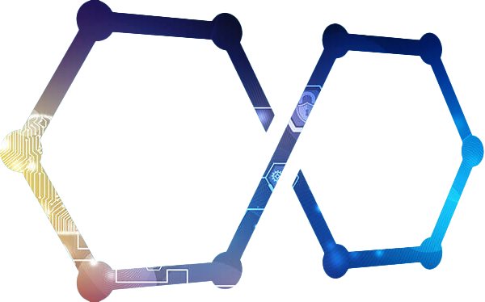

테이렌 소개
About Teiren
Teiren은 Terabyte+Siren의 합성어로, 테라바이트(TB) 단위의 데이터를 분석해 고객에게 최고의 Siren이 되자는 의미를 담은 보안 소프트웨어
전문기업입니다. 구성원 모두 대한민국 최고의 차세대 보안 인재 양성 프로그램 Best Of the Best(BoB) 수료생으로, 기업의 보안성 향상을 위해,
고객의 사이버 보안 난제를 해결하기 위해, 보안 담당자의 업무 부담감을 해결하기 위해 설립된 회사입니다.
설립 초기부터 다양한 보안 담당자들의 어려움에 귀를 기울였으며, 현재는 실제적으로 이 어려움을 해결하기 위해 Graph DB라는 선진 기술을 적용해 SIEM이라는
보안 솔루션을 제공하고 있습니다.Teiren을 통해 안전한 세상을 만나보세요.
팀 구성
Team

김성연 |
대표
Sungyeon Kim
서울여자대학교 정보보호학과
BoB 11기 보안컨설팅
프론트엔드 개발
BoB 11기 보안컨설팅
프론트엔드 개발

성유원 |
개발자
Yuwon Sung
대구대학교 컴퓨터정보공학부
BoB 11기 보안제품개발
백엔드 | 머신러닝 개발
BoB 11기 보안제품개발
백엔드 | 머신러닝 개발

이현경 |
연구원
Hyunkyung Lee
서울여자대학교 정보보호학과
BoB 11기 보안컨설팅
정책 개발 | 머신러닝 모델링
BoB 11기 보안컨설팅
정책 개발 | 머신러닝 모델링

조소망 |
연구원
Somang Cho
중앙대학교 산업보안학과
BoB 11기 보안컨설팅
데이터 시각화 | 해외 마케팅
BoB 11기 보안컨설팅
데이터 시각화 | 해외 마케팅
비전
VISION
"보이지 않는 공격을 본다"
사이버 공격은 날이 갈수록 더 다양하고 고도화 되고 있습니다. Graph DB라는 선진 기술을 적용해 기업 자산에 위협이 발생하기 전에 위협을 탐지하고, 보이지 않는
사이버 공격을 시각화 해 볼 수 있게 노력하겠습니다.
목표
GOAL
"사이버 보안 난제를 해결해, 기업의 보안성 향상과 보안 인력의 업무 부담감을 낮춰주는 기업이 된다."
저희 테이렌은 안전한 세상을 위해 더욱 더 빠르고 고도화 된 보안 제품을 만들어 나갈 것 입니다. 고객의 목소리에 귀를 기울이며, 여러분들의 사이버 보안에 대한
무거운 짐을 덜어줄 수 있도록 힘을 쏟겠습니다.